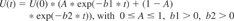

Moed, H. F. (2005), Statistical relationships between downloads and citations at the level of individual documents within a single journal. J. Am. Soc. Inf. Sci., 56: 1088–1097. doi: 10.1002/asi.20200
Author Information
Centre for Science & Technology Studies, Leiden University, P.O. Box 9555, 2300 RB Leiden, The Netherlands
Statistical relationships between downloads from ScienceDirect of documents in Elsevier's electronic journal Tetrahedron Letters and citations to these documents recorded in journals processed by the Institute for Scientific Information/Thomson Scientific for the Science Citation Index (SCI) are examined. A synchronous approach revealed that downloads and citations show different patterns of obsolescence of the used materials. The former can be adequately described by a model consisting of the sum of two negative exponential functions, representing an ephemeral and a residual factor, whereas the decline phase of the latter conforms to a simple exponential function with a decay constant statistically similar to that of the downloads residual factor. A diachronous approach showed that, as a cohort of documents grows older, its download distribution becomes more and more skewed, and more statistically similar to its citation distribution. A method is proposed to estimate the effect of citations upon downloads using obsolescence patterns. It was found that during the first 3 months after an article is cited, its number of downloads increased 25% compared to what one would expect this number to be if the article had not been cited. Moreover, more downloads of citing documents led to more downloads of the cited article through the citation. An analysis of 1,190 papers in the journal during a time interval of 2 years after publication date revealed that there is about one citation for every 100 downloads. A Spearman rank correlation coefficient of 0.22 was found between the number of times an article was downloaded and its citation rate recorded in the SCI. When initial downloads—defined as downloads made during the first 3 months after publication—were discarded, the correlation raised to 0.35. However, both outcomes measure the joint effect of downloads upon citation and that of citation upon downloads. Correlating initial downloads to later citation counts, the correlation coefficient drops to 0.11. Findings suggest that initial downloads and citations relate to distinct phases in the process of collecting and processing relevant scientific information that eventually leads to the publication of a journal article.
In the past, publishers of scientific and scholarly information have made their journals and articles available through the Internet to universities, corporations, and government institutes. Downloads of articles from online journals can be monitored by collecting and analyzing data on paper downloads captured by a Web server. Data on article downloads from ScienceDirect, which provides access to over 1,600 peer-reviewed academic journals published by Elsevier, are analyzed here.
Citation data produced and distributed by the Institute for Scientific Information (ISI; now Thomson Scientific) is widely available. Citations are used as tools in literature retrieval and also in the study of scholarly communication and the structure of the scholarly journal system; library collection management; the study of science as a physical system, a social activity or a historical sequence of scientific ideas; and in research performance assessment studies (Garfield, 1979).
The question addressed in this article is “How does the number of times an article is downloaded in full-text format from ScienceDirect statistically relate to the number of times it is cited in journals processed for the ISI Citation Indexes?”
Documents may be selected for downloading as a result of searching the database by many different categories; browsing through sections listing new or recent documents—for instance, a table of contents of a newly deposited journal issue; following up citations in previously downloaded or browsed documents; or as a result of serendipity. Automatically generated alerting messages based on predefined search terms may be sent out to users. All these processes may have an effect on article downloads.
Interesting analyses on the relationship between citations and downloads were based on Citebase, a citation and impact ranked search service from the Open Citation Project, indexing papers deposited in ArXiv, an e-print service in the fields of physics, mathematics, nonlinear science, computer science, and quantitative biology. Results of this work can be found in Hickman (2000) and in many related publications including Hitchcock et al. (2002), Brody, Carr, and Harnad (2002), and Harnad, Carr, Brody, and Oppenheim (2003). These studies reported evidence that downloads influence citations and that citations influence downloads.
If downloads and citations influence one another, how then can one disentangle the possible effect downloads have upon subsequent citations from the effect that citations bear upon subsequent downloads? To examine the relationships between downloads and citations, insight into their age distributions is crucial. Therefore, a first analysis presented in the Results on Obsolescence section relates to obsolescence in downloads and citations, and applies to downloads a two-factor model suggested by Parker (1982).
A second analysis (The Effect of Citations Upon Downloads section) examined the effect of citations upon downloads. If citations have a positive effect upon article downloads, one would expect to find an increase in the number of downloads of the cited article shortly after the citation was made. Thus, an attempt was made to quantify such an effect by determining the amount of “extra” downloads a citation may have “caused,” as a function of the number of times the citing article was downloaded.
Downloads made during the first 3 months of an article's lifetime will be denoted as initial downloads. During this initial phase, articles are hardly cited in other documents. A third analysis presented in The Effect of Downloads Upon Citations section focuses on the extent to which the number of initial downloads of a article statistically correlates with citations to this article in later phases of its lifecycle. A related issue is which factors may give rise to the observed variation in initial downloads among individual articles, and how their effects relate to those often attributed to the citation impact of these articles.
In a study relating downloads to citations, it is tempting to analyze downloading and citing behavior at the level of individual users, and to assess, for instance, whether scientist “S” who downloaded an article subsequently cited it later in one of his research articles. To carry out such an analysis, data on article downloads need to be linked to individual actors. Apart from the problem that the person who downloads an article is not necessarily the one who reads it—information specialists, research assistants, or librarians may actually connect to the database and download articles rather than the interested scientist—linking downloads to individual actors involves serious privacy issues, and was therefore not carried out in this study.
All findings presented in this article relate to a single journal: Tetrahedron Letters. Therefore, the study presented in this article can best be regarded as a case study. Only analyses of other journals may reveal the extent to which the outcomes for Tetrahedron Letters have a more general validity. But the case study presents useful, detailed data on usage from ScienceDirect and its relationship to citations recorded in the ISI database. Moreover, it suggests a methodology that can be fruitfully applied in a statistical analysis of the relationship between downloads and citations. In addition, tentative conclusions can be drawn that can be given the status of hypotheses in future studies.
In the Discussion session outcomes will be compared to those obtained in various Citebase/ArXiv analyses. It should be noted, however, that the two analyses differ substantially one from another: They relate to different databases with different contents from different research fields, to different times of measurement, and to different methods of analysis.
The analysis presented in this article is a part of a broader study of the ways in which users of ScienceDirect retrieve indexed documents, by comparing their use, denoted as “informal,” with formal use of documents as expressed in cited references in scientific publications. This study further develops the distinction made by Garvey and Griffith (1971) between formal and informal information exchange processes in science. In their view, the journal article–manuscript is a formal product, which is developed through the informal information-exchange process, including interactions with immediate colleagues, presentations at meetings or conferences, technical reports, and preprints.
Expanding these distinctions by categorizing the collection and reading of documents—including journal articles—under the informal domain, the current study deals with informal use of formal documents, and compares this informal use with formal use of formal documents that is normally studied in citation analyses based on the ISI Citation Indexes. A comparison of formal and informal use is not only expected to provide an insight into usage behavior, but may also yield a deeper understanding of citation behavior, and the relationships between reading and citing scholarly documents.
In this article the statistical relationship between downloads and citations at the level of individual documents published in the journal Tetrahedron Letters is analyzed. In 2002, this journal published 52 issues containing almost 2,300 short communications—denoted below simply as papers or documents—with an average length of about three pages. This journal was selected because of its relatively large total volume of published articles and collected citations, and its prominent position in its field.
Data available in this study relate to all downloads in full-text format of articles in the journal made during from January 2001 to June 2003 and include the date and time of the download and a reference to the downloaded paper. Full bibliographic information was available on all articles published in the journal during the period between January 1995 and June 2002. Data were extracted from ScienceDirect itself and its log files and can therefore be assumed to be highly accurate.
The Centre for Science and Technology Studies (CWTS) at Leiden University has created a database containing over 25 million scientific publications and 200 million cited references extracted from the CD Rom version of the Science Citation Index (SCI) and related citation indexes produced by the Institute for Scientific Information (ISI, currently Thomson Scientific, Philadelphia, PA). At the time this study was conducted, this CWTS/ISI database covered 1980–2002. From this database, the relevant citation data were extracted. Accurate citation links were established by applying dedicated software, taking into account the most important discrepancies (variations or errors) between cited references and target, i.e., intentionally cited articles.
Definition of Publication Dates
Accurate measurement of publication dates of downloaded articles and particularly those of citing papers constituted a major technical problem in this analysis. For documents published in ScienceDirect journals, in principle, two publication dates are available: the publication date of the printed version of an issue, and the data at which the issue was made available online through ScienceDirect. Over the years, more and more journal issues were made available online before the printed editions were published. In the analyses presented in this article, the publication date of a document is defined as the earliest date between printed and online publication dates.
In the analysis of citations the only date available in this study for all articles published in ISI source journals was the date at which a journal issue entered the ISI database. The CWTS/ISI database does not contain articles' publication dates. The entry date, however, is a good predictor of the date at which a journal issue was actually published and was used in the analysis of citation age distributions featured later in this article. However, in the analysis of the effect of citations upon article downloads presented in the section on the effect of downloads upon citations, it was not considered sufficiently accurate. Therefore, in this analysis only citations in articles published in ScienceDirect papers were examined, as their exact publication dates are known.
Obsolescence
Obsolescence can be studied in a synchronous and a diachronous approach. In the former, the date of download or citation is fixed, and one examines the number of downloads or citations as a function of the papers' publication date. In the latter, it is the other way around. One selects a cohort of papers with a fixed publication date, and analyses their downloads and citations as a function of time.
The Results on Obsolescence section applied a synchronous approach. For downloads made during a fixed month the age of the downloaded documents was recorded. Age was defined as the difference expressed in months between the date of the download and the date the downloaded article was published. In addition, the number of “downloadable” documents from each month back to January 1995 was defined. In a next step, “download densities” were calculated, by dividing the number of downloads of documents of a particular age, i.e., published in particular month, by the number of downloadable documents with that age. It is in this way that the adopted procedure seeks to correct for differences in the number of downloadable documents published monthly during the time period considered. This procedure was conducted for three subsequent months (April, May, June 2002) separately. For the three resulting densities per age class, an average value was calculated. In addition, the entire procedure was also carried out for citations to the journal extracted from the SCI.
Obsolescence is normally described as an exponential decay process. In this study citation densities are described using such a single-factor model (e.g., see Moed, van Leeuwen, & Reedijk, 1998). Measurement of obsolescence in downloading was based on a suggestion by Parker (1982) who in an analysis of library use hypothesized that more than one factor is involved in obsolescence of used materials. A model was fitted to the data consisting of the sum of two negative exponential functions, representing an ephemeral and a residual factor. Thus, if U(t) denotes the number of uses (downloads or citations) of usage densities with age t, the simple exponential, single factor model can be written as
and the two-factor model as:

A and (1 − A) are the relative weights of the two factors, and are constrained to add up to 1. U(0) represents the number of uses of documents with age 0, i.e., published in the month of use. Parameters b1 and b2 are the exponential decay constants.
The Journal Citation Reports (JCR) published by the Institute for Scientific Information (Thomson Scientific) includes so-called “cited half-lives” for scientific journals based on citation counts. This measure is estimated for each citing year, and is defined as “the number of journal publication years going back from the current year which account for 50 percent of the total citations received by the cited journal in the current year.” Analogously, a “downloaded half-life” was defined as the number of months going back from the current month which account for 50 percent of all paper downloads in the current month.
Effect of Citations Upon Article Downloads
In a diachronous analysis all articles were selected that were published in the journal during 2001. It is crucial that each paper is analyzed within the same time window, i.e., that the length of time after its publication date during which downloads and citations are analyzed is the same for all papers. Due to the time span of citation and download data available in this study, the time window applied in this analysis amounts to 19 months, the time period during which both download and citation data were available for articles published in the last month of 2001.
From this set, a first group of articles was selected that received from SCI journals one citation only, and that received this one citation from a ScienceDirect journal. The latter criterion was applied to ensure an as accurate as possible measurement of the date at which the citation occurred. A second group was formed of papers that were not cited at all in ISI-source journals during the time window considered.
The age distribution of downloads observed in the group of uncited articles was used to estimate for the papers cited once the number of downloads during the first 3 months after the citation that one would expect to find if the papers would not have been cited. The deviation between actual and expected numbers of downloads of cited articles was used as a rough estimate of the number of downloads that can be attributed to the citation.
To be specific, if paper A was cited in month T, the number of downloads prior to T is denoted as U(T − 1). For uncited papers the ratio of the number of downloads in T − 1 and T is denoted as f(T). The expected number of downloads of A in month T was calculated as the product U(T − 1) * f(T). Estimates for expected number of downloads in months T + 1 and T + 2 were compiled in a similar way.
This study analyzes the effect of citations upon downloads only during the first 3 months after the date the citation occurred. A case study presented in the Results on obsolescence section below suggests that most of the effects of citations upon downloads occur during this time interval. A time period of 3 months includes both instantaneous and a substantial part of delayed follow up of citations. However, this choice is to some extent arbitrary. A more-detailed analysis based on time series data for more papers and over longer time periods could examine effects in later months.
Effect of Article Downloads Upon Citations
A diachronous approach analyzed the set of documents published in the journal during the first 6 months of the year 2001. This set includes 1,190 short communications, for each of which downloads and citations could be counted as a function of their age during a period of 25 months, starting with the month of publication. The age of a downloaded or cited paper was defined as the difference expressed in months between the date of the download or citation and the date the downloaded or cited article was published. For instance, documents published in January 2001 and downloaded in September 2001 were at the date of download 8 months old.
Selecting articles from the complete year 2001, as was done in the study of the effect of citations upon downloads, and consequently applying a 19-month instead of a 25-month time window, would reduce the average number of citations per paper by more than 30%, and prevent citation rates from being sufficiently discriminatory.
The 1,190 short communications were categorized into seven classes based on the number of times they were cited during the first 25 months after publication date. Classes were defined in such a way that documents were as evenly distributed among classes as could be achieved in view of tied observations. The numbers of downloads and received citations were determined for various age periods, and simple Spearman rank correlation coefficients and measures of association between these two variables were calculated.
Figure 1 presents the cumulative age distribution of articles downloaded from the journal Tetrahedron Letters during the period April–June 2002. It shows that about 40% of downloads involved documents that were at most 6 months old. For this journal in the months April–June 2002 a downloaded half-life (analogous to ISI's cited half-life) of 12.6 months was found.
Figure 2 presents observed and computed densities for downloads based on the two-factor model and for citations based on the single-factor model. The latter model takes into account densities at ages of 19 and older that represent the declining phase of the journal papers' average impact.
Although the two-factor model provided much better fit of the downloads data than a single-factor model, it does not properly account for the number of downloads made during the first 2 months after publication date. Therefore, the scores in these months were not included in the fitting procedure; they are displayed as singular data points in Figure 2. The vertical axis' label “Uses” denotes downloads or citations.
Table 1 gives the parameter estimates for the two-factor model (downloads) and the single-factor model (citations). For downloads the decay constant of the ephemeral factor amounts to 0.5, which corresponds to a half-life of 1.4 months, and that of the residual factor of 0.014, representing a half-life of 4.1 years. For citations the decay constant amounts to 0.010 and corresponds to a half-life of 5.8 years.
Table 1. Parameter estimates for single and two-factor model.
As an introduction, Figure 3 presents data on downloads and citations for three papers denoted as A, B, and C, as a function of the age of paper A, measured in months. The case presented in this figure is based on “real world” data selected from the study presented in this article.
When paper A is published online, downloads rise quickly, followed after a few months by a strong decline. When paper A is 7 months old, paper B is published. B cites A. In fact, this is the first citation to A recorded in ISI's Science Citation Index. The downloading pattern of B is similar to that of A. The number of downloads of A increases in the first and second month after the month in which B is published. This could be attributed to a delay in following up the citation to A made in paper B, to the extent that users first retrieved paper B, read this paper during the next few weeks, and decide to download cited paper A.
When A is 13 months old, paper C is published. C cites both A and B. B receives its first citation 5 months after publication date. The download pattern of paper B after being cited by C may also reveal a delayed citation follow up. Downloads of paper A show a peak in the month in which C is published. This can be qualified as instantaneous downloading following up the citation made in C, possibly in the same user session as that in which C was retrieved. Downloads of A also increase in the 16th month after its publication.
The case study suggests that most of the effects of citations upon downloads occur during the first 3 months after the citation occurred. A time window of 3 months thus seems to include both instantaneous and a substantial part but probably not all of delayed follow up of citations.
To conduct a more systematic analysis of the effect of citations upon downloads, the age distribution of downloads was calculated for all papers published in the journal in 2001 and not cited at all during the time period up until June 2003. Next, all papers were selected that were published in 2001 and cited only once in SCI source journals during that period. As explained earlier, to define time intervals as accurately as possible, it was decided to consider from this set only those papers that were cited in ScienceDirect journals. This final set contained 52 papers, while the mean and median age at which they received their citation amounted to 7.6 and 7.0, respectively.
These 52 papers were categorized into two classes: articles cited in other ScienceDirect documents not published in the journal itself; and those cited from the journal itself. For papers in the latter class, data were available on the download frequency of the documents citing them. To analyze the relationship between the size of the effect of citations upon paper downloads and the download frequency of the citing documents, these papers were subdivided into two subclasses containing the papers with the bottom and top 50% most frequently downloaded citing papers, respectively. Download frequencies of citing documents were compiled for the first 3 months after publication date only.
For each of the 52 papers the number of downloads was estimated that one would expect to occur during the first 3 months after citation (including the month of citation) if the paper had not been cited at all, based upon the number of downloads of a paper prior to the month of citation, and the age distribution of downloads of uncited papers. The expected number of downloads was compared to the actual number at the aggregate level adding up actual and expected number of downloads of all papers.
The results are presented in Table 2. At the aggregate level, 1,081 actual downloads were made during the first 3 months after citation, whereas one would expect to find 865 downloads if papers would not have been cited. Therefore, during this period downloads increased hypothetically by 25%, due to the citation. It should be noted that the major part of downloads takes place before articles receive their citation. Thus, the increase in downloads due to citation, relative to the total downloads during the first 19 months after publication date, is much smaller: 1.7%. The two percentages are not very sensitive to variations in the length of the time window applied. For instance, if one analyzes papers published during the first 6 months of 2001 during a time window of 25 months, the increase in downloads amounts to 31 and 1.5%, respectively.
Table 2. Estimated number of downloads attributed to the citation.
Citing paper in ScienceDirect
Citing document in journal
Indicator
All citations
Citing document not in journal
High # downloads
Low # downloads
Papers published in 2001 with one citation only
52
25
14
13
Mean and median age of citation
7.6; 7.0
8.6; 9.0
6.4; 5.5
7.1; 6.5
Actual downloads during first 3 months after citation
1,081
403
316
362
Expected downloads during first 3 months after citation based on age distribution of uncited papers
865
382
182
301
Actual–expected downloads
216
21
134
61
% Downloads during first 3 months after citation, attributed to the citation
25%
5%
74%
20%
Total downloads during first 19 months after publication date
12,800
6,200
3,260
3,340
% Of total downloads during first 19 months after publication date attributed to the citation
1.7%
0.3%
4.3%
1.9%
Table 2 also shows that the increase of downloads attributed to the citation is much higher for papers cited in the journal itself than it is for papers cited from other ScienceDirect journals. Moreover, papers cited from heavily downloaded documents show a much higher increase in downloads after the citation than do those that are cited from less frequently downloaded documents: 74 against 20%.
Table 3 presents basic statistics on the categorization of the 1,190 papers published during the first half of 2001, based on the number of times they were cited during a period of 25 months. The total number of downloads is about 410,000 and the total number of citations is about 4,300. It can thus be concluded that during the first 2 years after publication date, the total paper download frequency of the journal within the ScienceDirect environment is about 2 orders of magnitude higher than the total citation frequency. During this period, there is about one citation for every 100 downloads. The average number of downloads per paper amounts to 172, and the average number of citations recorded in the ISI database per paper per year to 1.6.
Table 3. Categorization of documents on the basis of number of times cited.
# Citations (class)
# Docs
Citations/doc
Initial dnlds/doca
Total dnlds/docb
Actual increase in total dnlds/docc
Expected increase in total dnlds/docd
aInitial dnlds/doc: Average number of downloads per document made during the first 3 months after publication date.
bTotal dnlds/doc: Average number of downloads per document made during the first 19 months after publication date.
cActual increase in Total dnlds/doc: Actual increase in Total dnlds/doc relative to the number of downloads per document for uncited documents.
dExpected increase in Total dnlds/doc: Expected increase in Total dnlds/doc assuming that each citation leads to an increase of 1.7% (see Effects of Citations Upon Downloads section).
0
141
0.0
180
286
1
228
1.0
188
310
8%
1.7%
2
216
2.0
196
327
14%
3.4%
3
165
3.0
207
348
22%
5.1%
4–5
186
4.4
200
345
21%
7.5%
6–8
150
6.9
197
362
27%
11.7%
≥9
104
12.7
253
490
71%
21.6%
Total
1,190
3.6
200
343
20%
6.2%
Table 3 shows that the number of initial downloads per document, made during the first 3 months after publication date, remains more or less stable over the various citation classes except in the class of papers with nine or more citations. During the first 3 months after publication date, documents receive hardly any citations. The total number of downloads per document in a class increases as the number of received citations increases. It must be noted, however, that this outcome reflects the joint effect of downloads upon citations, and that of citations upon downloads. The semi-last column presents the increase in the total number of downloads per document in a class, expressed as a percentage relative to the number of downloads per document for uncited documents. The last column gives the expected increase in total downloads per document under the assumption that each citation leads to an increase of 1.7% as estimated in the Effects of Citations Upon Downloads section. Comparing the last two columns one with the other, it follows that the ratio of actual and expected increase in downloads amounts to about 3.
Table 4 analyzes correlation between total, initial, and later downloads on the one hand, and citations on the other. All rank correlations in this table are significant at p = 0.01. Table 4 shows that, if both downloads and citations are counted during the entire age period of 25 months, they show a Spearman rank correlation coefficient of 0.22. When documents are between 0 and 2 months old, their number of downloads shows a positive, though very weak Spearman correlation coefficient of 0.11 with the number of times the same documents are cited during the first 25 months after publication date. Counting only downloads made at ages between 3 and 25 months, however, the correlation coefficient rises somewhat to 0.35.
Table 4. Spearman rank correlations between downloads and citations for various age classes.
Downloads at ages
Citations at age 0–25
0–25
0.22
0–2
0.11
3–25
0.35
To examine in more detail the relationship between downloads of documents at ages 0–2 months versus citations received by the same documents at ages 3–25 months, citation scores were categorized in the seven classes presented in Table 3, whereas download frequencies were grouped into deciles. From the resulting 7 × 10 matrix the difference between actual and expected cell frequencies was expressed by the chi-square statistic. For this measure a value of 70.8 was obtained, which is, the number of degrees of freedom being 54, not significant at the 5% probability level. In other words, the observed deviations could be caused by chance. The cell containing documents with the highest citation and highest download rates made by far the largest contribution to the chi-square statistic: 12.1 or about 17%.
The next analysis presented in Table 5 subdivides the period of 25 months into an early and a later period. For each age class the distributions of downloads and citations among papers is characterized by their mean, median, and skewness. Table 5 presents data on downloads and citations and shows once again how slowly citations develop over time compared to downloads. At age 0, 1, or 2 months the documents received only 0.9% of all citations. In addition, it shows how the skewness of the download distribution increases with age. All distributions are skewed to the right. For downloads of 0–2-month-old documents, the mean is 200 and skewness 1.0, whereas for downloads of documents that are 15–25 month old at the date of use the values of these two statistics amount to 52 and 2.7, respectively.
Table 5. Statistics on downloads and citations per age class.
It is essential to make clear that all findings presented in this article relate to a single journal: Tetrahedron Letters. The journal is special in the sense that it publishes over 2,000 papers a year in weekly issues. Moreover, this journal publishes “short communications” typically with a length of three pages. This type of paper may exhibit reading and citation characteristics that are different from those of longer, full research articles. Moreover, there may be differences among research fields as well. Therefore, the study presented in this article can best be regarded as a case study. Only analyses of other types of journals and journals from other research fields may reveal the extent to which the outcomes for Tetrahedron Letters have a more general validity. Therefore, conclusions must be tentative, but can be given the status of hypotheses in future studies.
It was found that during the first 2 years of the papers' life cycle, there is about one citation for every 100 downloads. The average number of downloads per paper amounts to 172, and the average number of citations recorded in the ISI database per paper per year to 1.6. As a comparison, Hickman (2000) estimates for downloads from ArXiv, using various assumptions, a number of downloads per paper per year between 130 and 275, which is in the same order of magnitude as that for Tetrahedron Letters from ScienceDirect.
The two-factor model of obsolescence provides a good fit of the data of article downloads except for downloads in the first 2 months after publication. Apparently in these months the number of downloads is far above that predicted by the model, particularly in the second month after publication date. It must be noted that these numbers are to a certain extent distorted by the fact that some issues may be published at the beginning of a month, and others at the end. This explains why the number of downloads in the month of publication itself is lower than that obtained one month later. An analysis at a per-day resolution could provide more insight, but the necessary data were not available in this study.
The Citebase/ArXiv analysis does not present specific statistics on the age distribution of downloads. The chart presented by Hickman (2000) suggests that the downloaded half-life for the archive as a whole is much smaller than the 12.6 months obtained for the ScienceDirect journal analyzed in this article, and may even be less than one week. The authors relate this high proportion of downloads during the first week that a paper is in the archive to the “new paper rush” induced by e-mail alerts. The fact that the number of paper downloads from Tetrahedron Letters in the first 2 months after publication data is far above that predicted by the two-factor model could in fact be attributed to such e-mail alerts from ScienceDirect.
One may hypothesize that the ephemeral factor relates to browsing, carried out by users who connect to ScienceDirect to run through recently published journal issues and retrieve relevant documents from them, primarily selected on the basis of their “face value.” In downloads of documents during the first 3 months after publication, denoted in this article as initial downloads, it can be assumed that this ephemeral factor is the dominant one.
The residual factor can be related to type of use that can be denoted as archival. In this type of use, ScienceDirect is used as an archive of full texts and their formal (citation) relations, and relevant documents from all ages are retrieved. This type of use is more focused, and is the dominant type when older documents are retrieved. At later ages, ageing characteristics of article downloads are similar to those found for citations. Not only is the downloads' residual factor statistically similar to the ageing factor found for citations, but also the download distribution is for later ages more similar to the citation distribution in terms of their skewness.
The distinction between the two types is purely analytical. In practice, the two types overlap in time, and may be carried out in one single user session. Ways for obtaining more direct evidence for such a hypothesis from a statistical analysis of the context, i.e., of the actions registered in user log files and taken by a user prior to downloading a document, may be examined in a follow-up study and is not discussed in the current article.
The analysis of downloads as follow up of citations suggests that during the first 3 months after a paper is cited, its number of downloads increases with about 25% compared to what one would expect to find if it would not have been cited. It is hypothesized that this increase is actually due to the citation. The cited paper was brought to the attention of the user who subsequently decided to download it. The user may have been unaware of the paper's existence before the citation, but it is more plausible to assume that the user was not aware of the paper's relevance, and that the context in which it was referred to in the citing paper generated a cognitive influence upon the user's perceptions.
In the Citebase/ArXiv analysis Hickman (2000) estimated the percentage of downloaded papers that have had a paper downloaded before them (by the same user) that cites them. He found a percentage of 13, but this figure is hardly comparable to those presented for Tetrahedron Letters as the two figures are generated in completely different ways.
It was found that articles cited only once in a frequently downloaded document show a much higher increase in downloads during the first 3 months after the citation than do those that are cited in a less frequently downloaded document. This outcome suggests that more downloads—of citing documents—lead to more downloads of the cited paper through the citation. However, it does not show that more downloads lead to more citation. It must be noted that the data available in this study made it possible to conduct this analysis only for citing documents and cited papers published in the same journal. To reach more solid conclusions, data on downloads of citing documents published in other journals need to be included, as well as accurate publication dates of documents in journals not included in ScienceDirect.
The analysis may be affected to some extent by citations that are not recorded in the SCI source journals, particularly those that are made in journals included in ScienceDirect but not covered by the SCI. However, their effect is expected to be small, as the overwhelming part of journals citing Tetrahedron Letters are covered by the SCI.
An analysis of 1,190 articles in the journal during a time interval of 2 years after publication date revealed a Spearman rank correlation coefficient of 0.22 between the number of times a paper was downloaded and its citation rate recorded in the SCI. However, this outcome measures the joint effect of downloads upon citation and that of citation upon downloads. Focusing on initial downloads, made during the first 3 months after publication date—during which papers receive very few if any citations—the Spearman rank correlation coefficient between downloads and citations is 0.11.
Although in a separate analysis no statistical evidence was obtained for assuming an association between initial downloads and citations, it was also found that among highly cited papers there are more frequently downloaded ones than expected and vice versa. Apparently, there is a relatively small group of both highly cited and frequently downloaded papers that seems to be statistically responsible for the observed weak, though significant, positive Spearman correlation coefficient of 0.11 between the two variables. These papers can be assumed to have a great importance that is obvious at the time of publication and that is acknowledged and materialized in citations in a later phase of their lifetime. It cannot be maintained that users are entirely unaware of a paper and its content prior to publication. An earlier version of an article may have been circulated as a reprint, or may have been presented at meetings or international conferences.
During the first 3 months after publication date, the number of times documents from the journal are retrieved in full-text format ranges between 7 and 872, a difference of 2 orders of magnitude. During this time interval, articles are hardly cited and in most cases not cited at all. Thus, citations do not influence downloads during the first months of a paper's lifetime. Possible factors that account for the observed variation in downloads are: (a) the perceived quality or relevance of the paper's content, (b) its cognitive breadth, (c) the size of the potentially interested reading audience, (d) the prestige of publishing authors or their institutions, or (e) the paper's news value. The outcomes suggest that the primary factors responsible for variation in downloads among individual papers are different from those influencing the papers' citation rates. Additional bibliometric research could quantify such factors and correlate these to the number of downloads as well as to citation counts.
It can be hypothesized that the number of downloads primarily reflects a community's awareness of a paper, in terms of its availability and particularly its face value. Scientists may read—and in this sense use—many papers in their research, but during the research process and the writing their own papers, they sort out the articles worth citing and those that are less so. Thus, downloads and citations relate to distinct phases in the process of collecting and processing relevant scientific information that eventually leads to the publication of a journal article, the former being located more in the beginning, and the latter more towards the end of it.
It was found the number of downloads per document, expressed as a percentage relative to the number of downloads per document for uncited documents, increases with increasing citation frequency. But this increase in total downloads per document appears to be substantially higher than the expected increase under the assumption that each citation leads to an increase of 1.7% as estimated earlier. This outcome suggests that the observed correlation of 0.35 between downloads made after the initial period of 3 months and citations is not merely the result of the effect of citations upon downloads, but that it may also reflect the effect of other factors, particularly the effect of downloads upon citations.
It must therefore be concluded that, although the case study of the journal suggests that more initial downloading hardly leads to more citations, no conclusions can be drawn on the possible effect upon citations of downloads in later phases of a paper's lifetime. To the extent that longitudinal download and citation patterns reflect numerous individual users who download and subsequently cite particular documents, time delays between downloads and citation show a large variability among users, due to differences in the amount of time users need to prepare a manuscript, and to differences in publication delays among journals selected for publication. Therefore, the methodology applied in this article cannot assess the possible effect of downloads in later phases of a paper's lifetime upon citations, as it cannot be separated from the effect citation may have upon downloads. A necessary condition for achieving such a separation is to break usage data down at the level of individual users, but these data were not available in this study.
In an analysis of Citebase/ArXiv covering 8 months of Web log data, Hickman (2000) reports an overall correlation coefficient for downloads and citations of 0.11. A partial correlation coefficient excluding the influence of age is slightly higher: 0.16. Hitchcock, Brody, Gutteridge, Carr, and Harnad (2003) used a newer version of the Correlation Generator applied by Hickman (http://citebase.eprints.org/anasis/correlation.php), at a later date and on a larger data sample, and found an overall correlation coefficient of 0.27. Hitchcock et al. (2003) conclude that “as open access increases usage compared with fee-based usage and offline usage, this feeds directly into increased impact for authors,” and thus seem to interpret the observed positive correlations as evidence that more downloads lead to more citations. On the other hand, Brody et al. (2002) emphasized that “it is not known whether frequently downloaded papers lead to more citations, or whether the citations . . . leads to more downloads.” Our findings do suggest that one should be at least be cautious in drawing conclusions on the frequency of paper downloads from formal citation patterns and vice versa.
The author is grateful to Marthyn Borghuis and Lotte Sluyser at Elsevier's ScienceDirect for making available the ScienceDirect log files analyzed in this paper, and for their comments on an earlier draft, and also to Michael Mabe (Elsevier), Renald Buter (CWTS), two anonymous referees and particularly to Eugene Garfield (Chairman Emeritus, Institute for Scientific Information) for their useful comments. The author is solely responsible for the analyses and conclusions presented in this paper.
Brody, T., Carr, L., & Harnad, S. (2002, June). Evidence of hypertext in the scholarly archive. Proceedings of HT. '02, the 13th ACM Conference on Hypertext. Retrieved from http://opcit.eprints.org/ht02-short/archiveht-ht02.pdf
Garfield, E. (1979). Citation indexing. New York: Wiley.
Garvey, W.D., & Griffith, B.C. (1971). Scientific communication: Its role in the conduct of research and creation of knowledge. American Psychologist, 26, 349–362.
Harnad, S., Carr, L., Brody, T., & Oppenheim, C. (2003, April). Mandated online RAE CVs linked to university eprint archives: Improving the UK research assessment exercise whilst making it cheaper and easier. Ariadne, 35.
Hitchcock S., Bergmark, D., Brody, T., Gutteridge, C., Carr, L., Hall, W., Lagoze, C., et al. (2002). Open citation linking: The way forward. D-Lib Magazine, 8.
Moed, H.F., van Leeuwen, T.N., & Reedijk, J. (1998). A new classification system to describe the ageing of scientific journals and their impact factors. Journal of Documentation, 54, 387–419.
Parker, R.H. (1982). Bibliometric models for management of an information store. II. Use as a function of age of material. Journal of the American Society for Information Science, 33, 129–133.


{kind=link}
{kind=link}
{kind=link}
{kind=link}
{kind=link}
{kind=link}